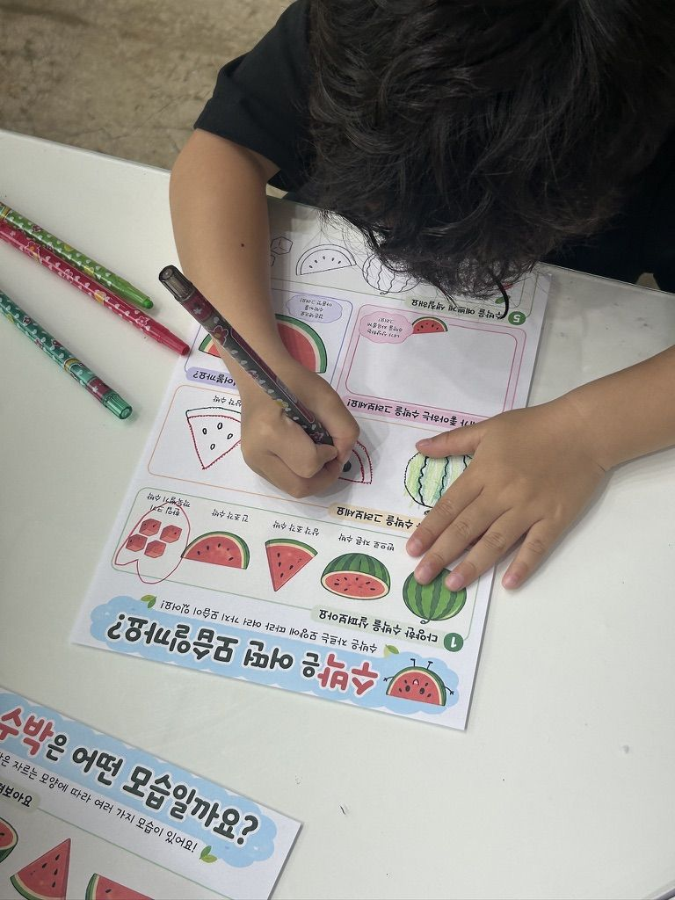
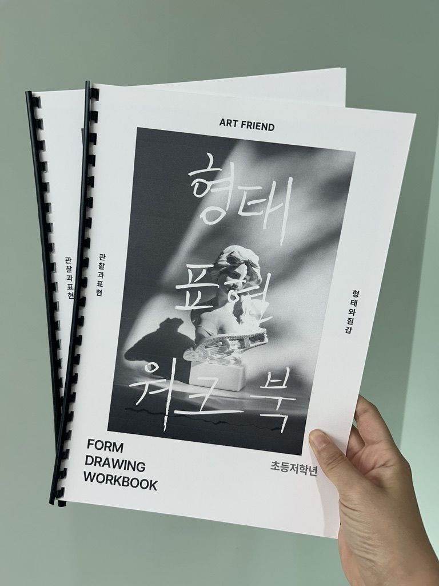
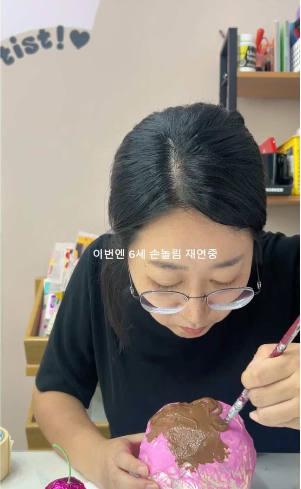

직접 짜는 커리큘럼
수업을 직접 설계하고, 먼저 경험하고, 꼼꼼하게 가르칩니다.
아이를 가장 잘 아는
선생님이 수업을
고민합니다

원장이 교육의
큰 흐름을
설계합니다

수업 한 달 전,
샘플 작품으로
미리 확인합니다

직접 경험한
선생님이 아이의
과정을 이끕니다


관리 · 2달에 한 번
부모님도
수업에 초대해요
학부모 초청 수업에서 아로마테라피와 함께,
아이가 배우는 커리큘럼을
부모님이 직접 체험해 보실 수 있습니다.
학원 차량도 있어요

운행 지역
유치원
세종유치원 · 룸비니유치원
아파트
포스코 · 힐스테이트 · 디클리브 · 벽산 1~4차 · 덕산 3차
전담 기사님이 운행하며, 등하원 시간과 위치는 등록 때 함께 정합니다.